Hosts
Hosts is a menu of the sidebar that contains a bunch of links to host- related information pages. The dropdown is as follows:
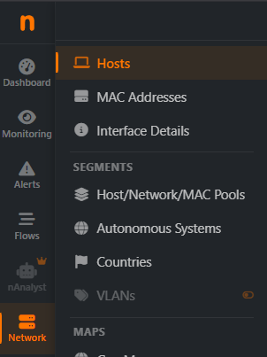
The Hosts Dropdown Menu
Host-related information pages available have the following content
Hosts: shows all hosts seen
MAC addresses: shows all MAC addresses seen
Assets: shows all the assets available (Active or Inactive)
Hosts
The Hosts page shows the devices (hosts) that ntopng sees on the selected network interface. It has two tabs:
Active Hosts: the hosts that are exchanging traffic right now.
Local Hosts Activity: how much traffic your local hosts made over a period of time.
If you open the page from an Autonomous System (for example from the AS list), an AS Info link appears at the top right: it opens the details of that Autonomous System.
Active Hosts

The Active Hosts Tab
This tab lists all the hosts that are active now, both inside your network (local) and outside it (remote). The list refreshes by itself every 10 seconds. Click a column title to sort the list by that column.
For each host you can see:
its IP address, with small icons that describe it: the operating system, the country flag, L for a local host, R for a remote host, and others (for example a blacklisted host)
its name
its VLAN (shown only if your network uses VLANs)
how many connections (flows) and alerts it has, and its score (the higher, the more suspicious its traffic)
how long ago it was first seen
how much traffic it sends and receives, its current speed and its total traffic
To open all the details of a host, click the button in the Actions column, or the small arrow icon next to its IP address. The menu next to the button also shows the connections (flows) of the host.
Finding hosts
Use the filters above the list to see only some hosts, for example only the local ones, only those of a VLAN or of a group (host pool). When there are many filters, they are inside the Filters button. Each active filter is shown above the list: click the x to remove it, or Clear filters to see all the hosts again.
You can also filter by clicking a value in the list: for example click a country flag to see only the hosts of that country, or the L badge to see only the local hosts.
The filters you choose are kept in the address of the page, so you can bookmark it or send it to a colleague.
Local Hosts Activity
Note
This tab needs an Enterprise M license (or higher), and the host timeseries must be enabled in the Preferences. If one of them is missing, the tab is greyed out: move the mouse over it to see what is needed.
This tab shows how much traffic each local host made in the period you choose with the time selector above the list (Live shows the traffic right now).
For each host you can see the traffic sent and received, the traffic with other local hosts and with remote hosts, and the total. The Availability column shows one square for each part of the period: grey means no traffic, and the darker the green, the more traffic the host made.
With Hosts Type you choose which hosts to list: those with traffic (the default), those without traffic, all the visible ones or the hidden ones.
From the Actions column you can:
see the traffic chart of the host (only for the hosts that are active now)
hide a host you are not interested in, so it no longer appears in the list
show a hidden host again (first choose Hidden in Hosts Type to find it)
Only administrators can hide or show hosts.
Host Details
The host details page shows everything ntopng knows about one host. Its views are the tabs below the page title: a view that can never apply to the host is not shown (for example DNS for a remote host), a view that is not available yet is greyed out and its tooltip says why (no data seen for the host, a license or a preference needed). When there are many views the tab bar scrolls sideways.
Next to the tabs:
Alerts Explorer: the alerts of the host (engaged ones when the host has some).
Historical Flows: the flows of the host stored in ClickHouse.
the ⋮ menu: the Periodicity Map and the Service Map of the host (behaviour analysis).
Overview
Overview is the default view of the Host Details page and provides detailed information including host MAC Address (or the last router MAC address if the host is remote) and its device type, IP Address (with network mask if detected), host pool, tags, operating system, Autonomous System, symbolic hostname (or IP address) with its badges (local or remote, private, blacklisted…), date and time of first and last packet seen for the host, traffic breakdown, amount of traffic packets received/sent, score, number of flows and peers as client/server, TCP problems, the further names of the host and, for local hosts, the usernames seen in its traffic (each with a badge telling the protocol, e.g. Kerberos, and when it was first and last seen). The values update by themselves every 3 seconds: the arrow next to a counter shows whether it grew since the last update. If the host becomes idle, a message says so and the values stop updating.
Administrators can reset the counters of the host (all of them, or only the blacklisted hosts counters) and, on inline interfaces, drop the traffic or the active flows of a local host. The Active Monitoring row adds the host to the ICMP active monitoring, or shows its last round trip time. All of this information is also available in JSON format by clicking on the JSON link; on packet interfaces the Download pcap button downloads the live traffic of the host.

The Overview of the Host Details Page
Also in case Wazuh is integrated in ntopng (see Wazuh Integration for more details), a button with the possibility to jump to Wazuh alerts will appear, giving the possibility to instatly check the Wazuh Alerts of an host.
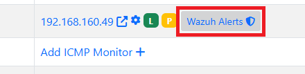
Wazuh Button
Note
Wazuh link is enabled only for Local Hosts.
Traffic
The Traffic Page provides Layer-4 protocol statistics for the host. A pie chart showing L-4 protocol breakdown is show at the top of page. A table with detailed statistics is shown below the chart.
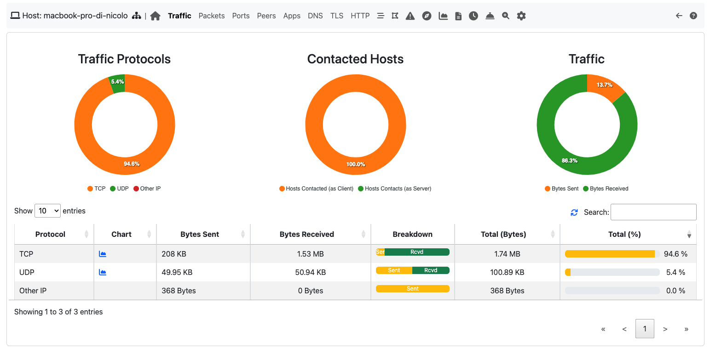
The Traffic View of the Host Details Page
Packets
Packets page provides pie charts with packet size distribution, both for sent and received packets.
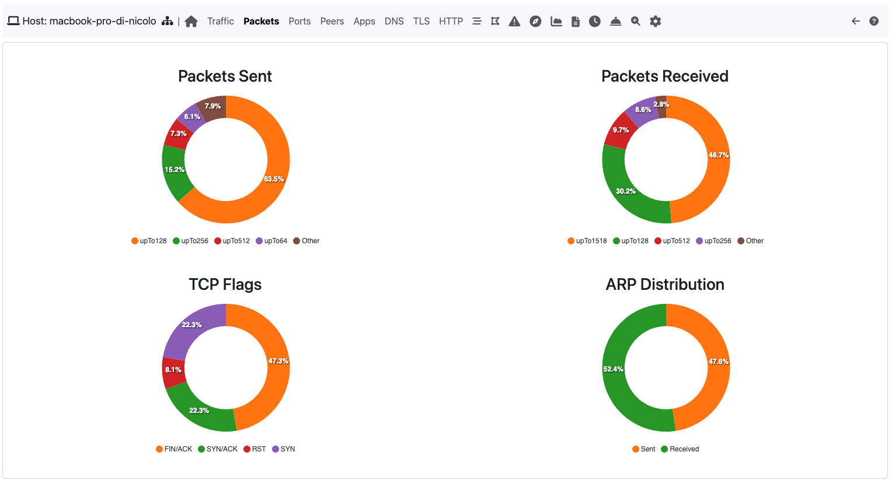
The Packets View of the Host Details
Ports
Ports page lists the server ports the host answered on and the server ports it contacted, split by UDP and TCP, each with its application. Click a server port of the host to open its historical flows (or the live flows of that port when ClickHouse is not enabled). Below, pie charts with traffic statistics grouped by port: a chart is available for client ports and another one is available for server ports.

The Ports View of the Host Details Page
ICMP
The ICMP messages (type and code) sent and received by the host, with the last peer of each direction and the packets. The table updates every 5 seconds. Click a message to see the live flows with that ICMP type and code.
Applications
Using the DPI information, this page provides in pie chart and tabular format the amount of traffic divided by application. An additional pie chart provides a statistics about protocol type. A click on the protocol name redirects the user to the page with detailed statistics about the selected protocol.

The Protocols View of the Host Details Page
DNS
The chart and the table displayed on this page report DNS statistics, such as the number of queries, their type (e.g., A, AAAA, PTR, and so on), and possible errors, plus the DoH/DoT servers used by the host. The values update every 3 seconds. The view is available only for local hosts.
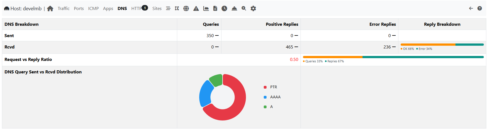
The DNS View of the Host Details Page
TLS
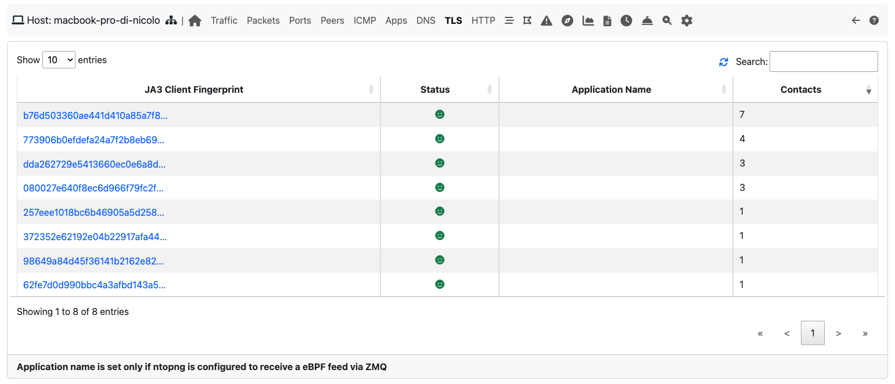
The TLS View of the Host Details Page
ntopng registers the JA3 TLS fingerprints of an host (either when the host is a client or a server) along with their the number of uses. As explained in the Flows section, this information is very important in order to uncover possible threats on the encrypted traffic. By clicking on the signature it is possible to manually check if the JA3 signature corresponds to a known malware into the abuse.ch database.
By taking a snapshot of the signatures registered on an host it is possible to know, for example, if the host has installed a new program or has updated an existing one. This may be very important on environments where the programs installed into an host are not supposed to change.
By enabling the nProbe Agent integration, this view can be further augmented with the name of the process which initiated or received the TLS connection.
SSH
ntopng registers the HASSH fingerprints of an host, either when the host initiates or receives an SSH connection, along with their the number of uses. As explained in the related Flows section, this information can be used to identify malicious applications or vulnerable SSH versions.
HTTP
This page provides information about the HTTP protocol in terms of requests done and responses received for each HTTP method, together with response codes. Counters are provided both as tables and pie charts. In the case of virtual host being detected, a badge with the number of virtual hosts detected for the same IP address is displayed in the host bar and an entry for each virtual server is displayed in a virtual server table.
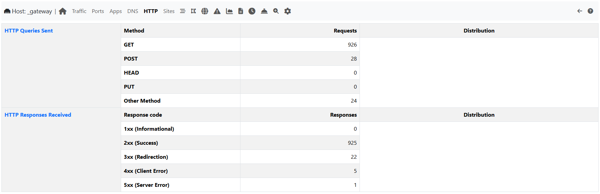
The HTTP View of the Host Details Page with Virtual Hosts
Sites
Note
This page is only available at lieast with a Pro License.
ntopng can keep track of top visited sites for any monitored local host. Enabling the tracking of top visited sites requires preference “Top HTTP Sites” to be set using the ntopng preferences page.

The Preferences Page to Enable Visited Sites
Once the preference has been enabled, this page will start showing visited websites, which are shown over the two most recent 5-minute intervals. Newly visited sites are placed under the “Current Sites”. Every 5 minutes ntopng moves the “Current Sites” under “Last 5 Minute Sites”, and starts over with a clean “Current Sites”.
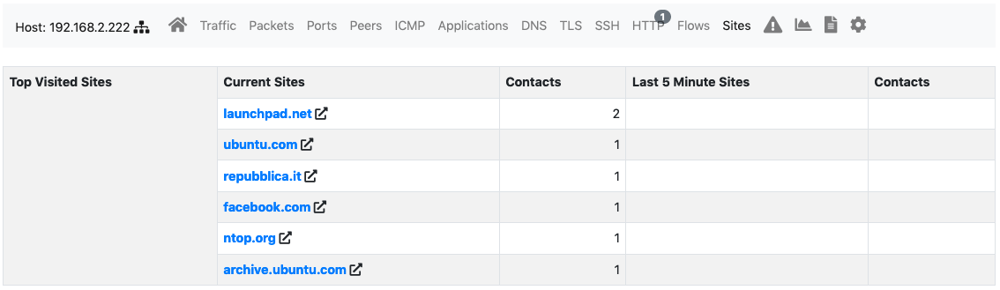
The Sites View of the Host Details Page
Column “Contacts” count the number of time a particular website has been visited. Every time the host visit a site, the corresponding “Contacts” counter is increased by one. The Time range selector shows the sites of another period (the hours of today, yesterday).
Note
The Sites tab is greyed out until the preference is enabled and the host has visited at least one website: its tooltip says which one.
Host Flows
The Host Flows tab lists all the active flows that have the selected host as an endpoint: the same list of the Live Flows page, always filtered by the host, with the other filters of the list (application, alerted flows…). A section of this manual discuss in greater detail the statistics shown for flows.

The Flows View of the Host Details Page
SNMP
SNMP page shows the SNMP devices and ports where the MAC address of the host was seen and, when the host is a monitored SNMP device, its system information. Needs an Enterprise M License.
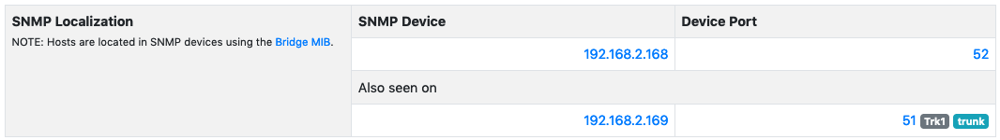
The SNMP View of the Host Details Page
Listening Ports
The TCP/UDP ports the host listens on, with the process and the package, as reported by the nProbe agent running on the host. The tab is greyed out when no listening port was reported.
Geomap
Geomap page provides an interactive map that shows the selected hosts, its flows, and its peers. The map is zoomable, both using the mouse rotor or the buttons at the top right corner. Each dot on the map is a host, by hovering the mouse on a dot a tooltip opens and information about the given host are presented.
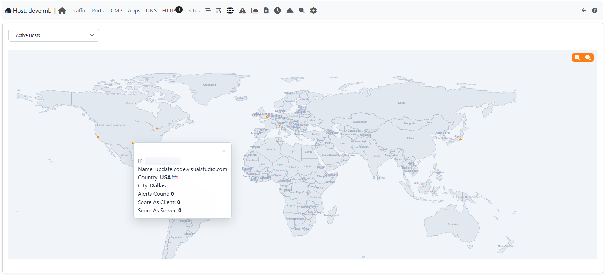
The Geomap View of the Host Details Page
Statistics
Statistics page (the Charts tab) provides historical traffic statistics for the selected host. The user can choose to filter statistics on a protocol basis and display data in several formats (e.g., bytes, packets, flows, and so on).
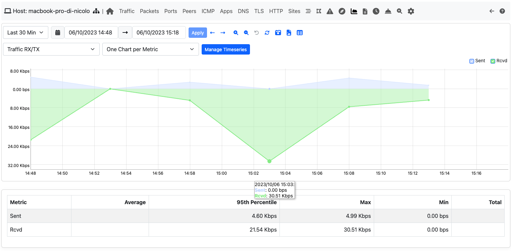
The Statistics View of the Host Details Page
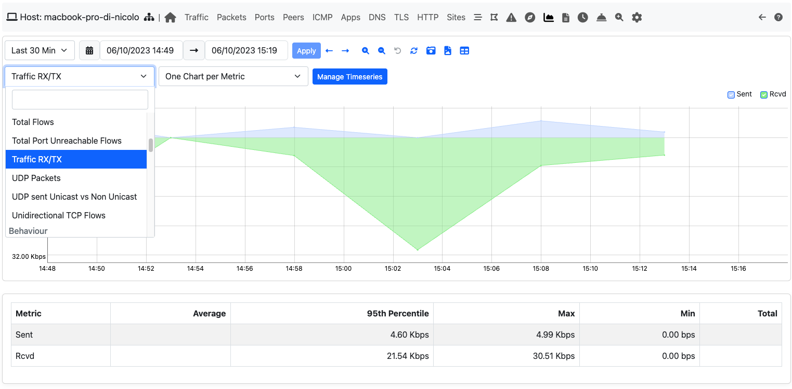
The Dropdown menu in The Statistics View of the Host Details Page
Periodicity Map
Note
This page is only available with an Enterprise L License.

The Periodicity Map entry of the ⋮ menu on the Host Details Page
The Periodicity Map is used to understand the local communication between hosts in a network. More information can be found at Periodicity Map.
Service Map
Note
This page is only available with an Enterprise L License.

The Service Map entry of the ⋮ menu on the Host Details Page
The Service Map is used to understand the local communication between hosts in a network. More information can be found at Service Map.
Historical Flow
Note
This page is only available with an Enterprise License and only if ClickHouse is enabled

The Historical Flow link on the Host Details Page
The Historical Flow is used to understand the local communication between hosts in a network. More information can be found at Historical Flow Explorer.
Host Configuration
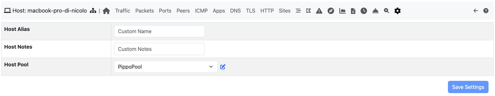
The Host Configuration on the Host Details Page
In this page a user is able to give an Alias to an Host (an alternative name for an host that’s going to be used in all ntopng), give a description to an host, assign this host to an host pool or hide this host from the Top Talkers computation.
MAC Addresses
The MAC Addresses page lists the network cards (MAC addresses) that ntopng sees on the selected network interface. Devices that are idle are not listed.
For each MAC address you can see:
the MAC address
its manufacturer, and the model when ntopng recognizes it
the device type (for example laptop, phone, printer), with an icon
its name; when it has none, the first host (IP address) that uses it and how many other hosts use it
how many hosts use it and how many ARP packets (the messages that link an IP address to a MAC address) it sent and received
how long ago it was first seen
how much traffic it sends and receives, its current speed and its total traffic
On nEdge a Location column also shows whether the device is on the LAN or on the WAN.
Use the filters above the table to show only the MAC addresses that sent traffic (Source Only), or the ones of a manufacturer or of a device type. You can also click a manufacturer, a device type or a location in the table to filter by it. Clear filters removes all the filters.
To open all the details of a MAC address, click the button in the Actions column, or the small arrow icon next to the MAC address. The menu next to the button also lists the hosts that use that MAC address.
MAC Address Details
The details page of a MAC address has these views, shown as tabs below the page title. A view that is not available is greyed out: move the mouse over it to see why.
Overview: the MAC address and its manufacturer name, the device type (and model when known), the hosts (IP addresses) that use it, where it was seen on the monitored SNMP switches, its name and host pool, the DHCP fingerprint (a signature of the device built from its DHCP requests), when it was first and last seen, the traffic it sent and received (updated every few seconds, with an arrow when it grows), its DHCP and ARP packets and when its counters were last reset. Administrators can reset its counters from here: the charts may have a gap after the reset.
Packets: how its packets split between IPv4 and IPv6.
SNMP: the SNMP switches and ports where the MAC address was seen. It needs Enterprise M and SNMP devices monitored by ntopng.
Charts: the traffic of the MAC address over time. Enable the MAC address timeseries in Preferences > Timeseries to record them.
Settings (administrators only): the alias shown instead of the MAC address, the device type and the host pool.
The Historical Flows button next to the tabs opens the stored flows of the MAC address (it needs ClickHouse).